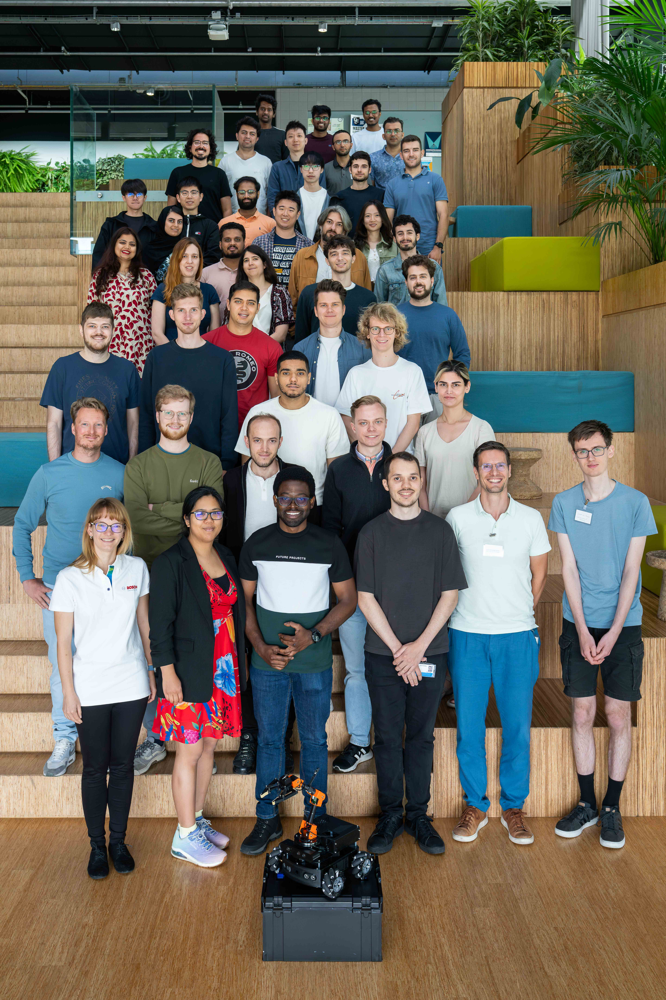
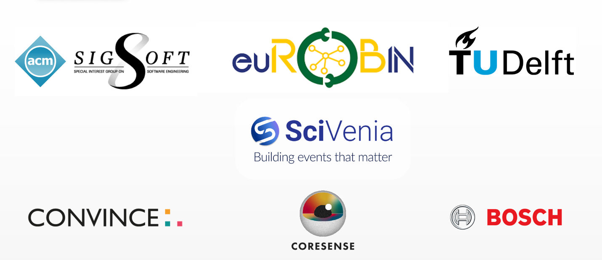

ACM SIGSOFT Summer School for Software Engineering in Robotics 2025
The 2nd edition of the ACM-SIGSOFT Software Engineering in Robotics Summer School was hosted by the Cognitive Robotics Department of the Delft University of Technology was a fun week of lectures, keynotes, hands-on sessions and social activities around robot software engineering.
One of the highlights of the school was the hands-on the participants enjoyed using the Mirte Master robot, thanks to the TU Delft Robotics MIRTE team (https://mirte.org/).
Each day covered a topic in engineering the software of a robot:
Day 1: Building and Deploying Robotic Systems. The students got a crash course on ROS2 from Jose Miguel Guerrero and the team at the Intelligent Robotics Lab (URJC, Spain), with practical hands-on using our home-built Mirte Master robots, thanks to our colleagues Martin Klomp, Arend-Jan van Hilten, and Jasper van Brakel (TUD).
To close the day, everyone enjoyed a sunny and delicious evening at the Vakwerkhuis cafe near the campus.
Day 2: Deliberation, Planning, and Execution in Robotic Architectures. After an inspiring keynote on “Cognitive Architectures for Robust and Reliable Robotics” from Esther Aguado (URJC, Spain), the students learned with Francisco J. Rodríguez Lera (Uni. Leon) how to use PDDL to program automated planning and integrate it in a layered robotic architecture capable of planning and executing tasks with PlanSys2. With our colleague Gustavo Rezende (TUD), the students experience how to plan and execute a navigation task with the MIRTE robots.
Day 3: Robot software architecting and modeling. Davide Brugali (Uni Bergamo. Italy) shared his insights about the Software and systems design process in his keynote. Then the students got familiar wiht systems engineering modelling in a tutorial exercise with Carlos Hernandez (TUD), and Ilias Gerostathopoulos (VU Amsterdam) discussed with them what self-adaptive systems are and why they are useful in robotics. Then, Elvin Alberts (TUD, VU Amsterdam) gave a tutorial programming self-adaptation on the MIRTE robot using behaviour trees, with his framework ReBeT.
To conclude the day, everyone enjoyed a typical boat tour, with rain and run, along the beautiful canals of Delft’s city center.
Day 4: Verification and Validation of Autonomous Robots. Michaela Klauck (Bosch, Germany) ran an impressive solo marathon, including an eye-opener keynote about reliability for robot software in industry, and lectures and hands-on tutorials on formal methods for verification, including model checking and the tooling they are developing for it in the CONVINCE EU project.
Day 5: Robots in Society. This inspiring day reminded us of the end-goal of software and robots: help people and society, with two keynotes, The first byPatrizio Pelliccione (GSSI, Italy) on “Democratizing the use of robots”, by enabling the specification of complex robotic missions in a friendly way. The second keynote by An Jacobs and Shirley Elprama (VU Brussels) discussed the complexities of studying robots, and how people relate to them, especially at work, in the wild, and it included an interactive part discussing study cases brought by the participants.
The original announcement for the sumemr school can be found here.
 Program
- Day 1 – June 30th: Building and Deploying Robotic Systems
- Day 2 – July 1st: Deliberation, Planning, and Execution in Robotic Architectures
- Day 3 – July 2nd: Robot software architecting and modeling
- Day 4 – July 3rd: Verification and Validation (V&V) of Autonomous Robots
- Lectures
- Keynote: Software Engineering for Reliable Autonomous Robots - Approaches and Challenges from an Industrial Perspective
- Introduction to V&V and Formal Methods (Markov Processes, Temporal Logics)
- Introduction to Model Checking Methods (Probabilistic Model Checking, Statistical Model Checking) & Formal Modeling Languages (JANI)
- Model Checking in Industry & the CONVINCE Project: Toolchain for Verification of Robotic Deliberation (AS2FM and SMC Storm) – Model Checking Tool Demo (SMC Storm, AS2FM, The Modest Toolset)
- Practical Sessions
- Lectures
- Day 5 – July 4th: Robots in Society